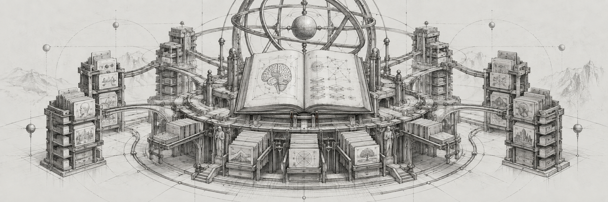
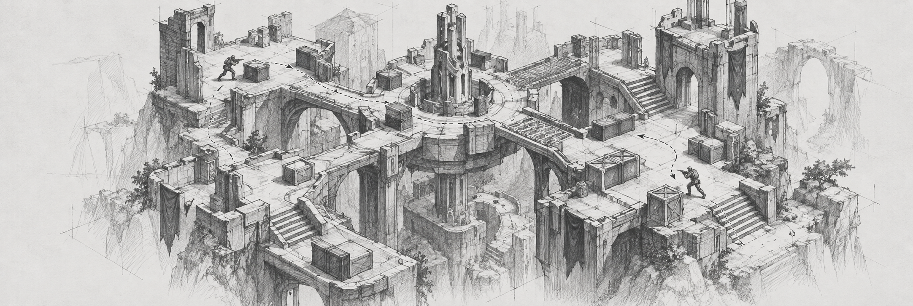
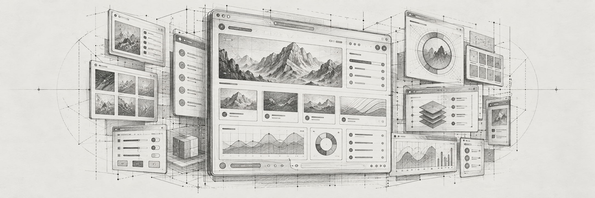

04 · AI INFRASTRUCTURE
CosmoCache
A persistent knowledge universe that gives coding agents cross-session memory—2.3× cheaper at 100 domains while retaining accuracy.
a full-stack engineer building thoughtful interfaces and useful AI tools
react · typescript · python · ai systems
01 / the first app · a work in progress
A curious little scout.
A bridge between websites and agents.

Point Weaszel at a page. It observes the page, accessibility tree, and forms; builds callable tools; and generates a Swagger reference. An agent can use those tools through the local adapter.
Explore the YouTube Swagger ↗Local adapter prototype. Live calls run on your computer.
02 / building a business
2xROAS, Inc.
Co-founder · product & engineering
November 2024 — August 2025
I co-founded 2xROAS, Inc., the company behind PumpAds. With my partners, I helped turn a complex AI workflow into a product that creates creator-style video ads for paying customers.


Illustrative AI creator concepts · not customer campaigns
Product brief → script → voice and visuals → lip sync → finished ad.
With an eight-person team, we built a multimodal pipeline connecting script generation, voice cloning, image and video generation, lip sync, revoicing, and final FFmpeg assembly.
My experience spanned the product, backend, AI workflows, and the infrastructure needed to bring them together.
We moved long-running jobs into independently scalable services, with queues and persistent job state. That kept n8n as a fast orchestration layer and supported bursts of 100 concurrent requests.
We also built a usage-credit ledger with reservations, reconciliation, and automatic refunds for failed generations, and secured $50K in platform credits to help manage early costs.
2xROAS, Inc. · Product: PumpAds · multimodal AI · distributed jobs · n8n · FFmpeg · Replicate & Cog
03 / a home for good ideas
Co-founder · Lead Backend & AI Engineer
December 2023 — August 2025
I co-founded SwipeBuilder to turn scattered ad inspiration into a searchable creative workspace. I led backend and AI engineering, from ingestion and semantic search to scripts grounded in the right references.
Collect ad references from platforms such as Meta, TikTok, and Google.
Organize references into folders and share creative boards with your team.
Explore saved ads and video transcripts to understand the ideas behind the creative.
Use AI copywriting to adapt a reference to a different product or offer.
I built natural-language and hybrid semantic search across 100K+ transcribed ads, combining embeddings, vector retrieval, metadata filters, personalized signals, and diverse results.
A production RAG pipeline brought relevant transcripts together with the customer's product, offer, and audience to generate scripts grounded in useful creative examples.
I built the backend for a five-person company: core APIs, billing, collaboration, recommendations, and asynchronous jobs. Crawlers and Chrome-extension imports fed the ingestion and transcription pipeline.
Lambda, SQS, SNS, and persistent job state handled long-running work, with retries, dead-letter queues, and status tracking. Daily budgets and query caching kept repeated research faster and costs under control.
Born in Baku. Raised in Stamford. Around computers from an early age.
Seymur moved from Azerbaijan to the United States at nine. Games and a curiosity for how things work eventually led him toward building software.
a different route into tech ↓A degree in Biology from Sacred Heart University. A career built in software.
That transition reflects the same drive behind his projects today: learn the system, understand the problem, and make something useful.
Full-stack compliance products, AWS infrastructure, partner relationships, and mentoring engineers. Seymur grew from Software Engineer to Tech Lead, owning products from planning through delivery.
Seymur co-founded 2xROAS, Inc., the company behind PumpAds. He worked across the product, AI workflows, and the engineering needed to bring them together.
Together, the team grew PumpAds to 1,000+ paying customers and $15K in monthly revenue within two months of launch. Explore the PumpAds story above ↗

A persistent knowledge universe that gives coding agents cross-session memory—2.3× cheaper at 100 domains while retaining accuracy.

A browser-native multiplayer arena shooter with 50 weapons, 14 maps, authoritative 30 Hz simulation, bots, progression, and 101 passing tests.

A multi-model workspace for generating the same React component across leading LLMs, comparing code and previews, and choosing the best output.
Cooking, soccer, fitness, and games. Growing up, the favorites included Halo, Gears of War, God of War, and RuneScape.
The curiosity doesn’t stop when the laptop closes.